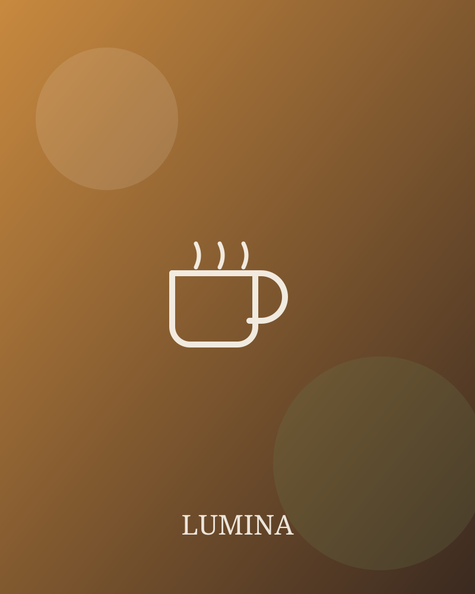
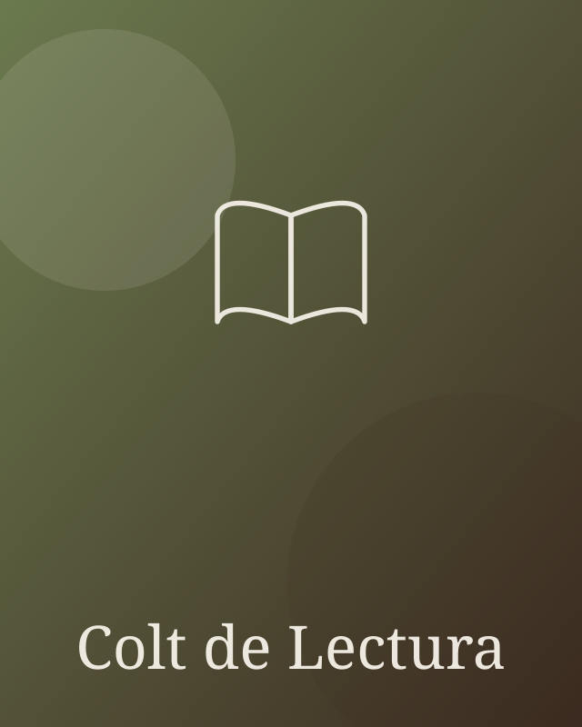

Cafea de specialitate
Boabe alese, prăjite proaspăt și preparate de baristi care iubesc ce fac.
La LUMINA îmbinăm cafeaua de specialitate cu liniștea unui colț de lectură și energia evenimentelor culturale. Te așteptăm la o ceașcă și o poveste.


LUMINA s-a născut din dragostea pentru cafeaua bine făcută și pentru cărțile care țin de vorbă. Ne-am dorit un loc unde poți lucra, citi sau doar respira, cu o ceașcă aburindă în față.
Prăjim atent, servim cu grijă și deschidem ușa unor evenimente mici, dar călduroase: seri de poezie, cluburi de carte și concerte acustice.
Descoperă evenimenteleLucrurile la care ținem cel mai mult, în fiecare zi.
Boabe alese, prăjite proaspăt și preparate de baristi care iubesc ce fac.
Rafturi pline, fotolii comode și liniștea de care ai nevoie ca să te pierzi într-o carte.
Seri de poezie, cluburi de carte și concerte mici care adună oameni faini.
Câteva dintre produsele cele mai cerute de oaspeții noștri.